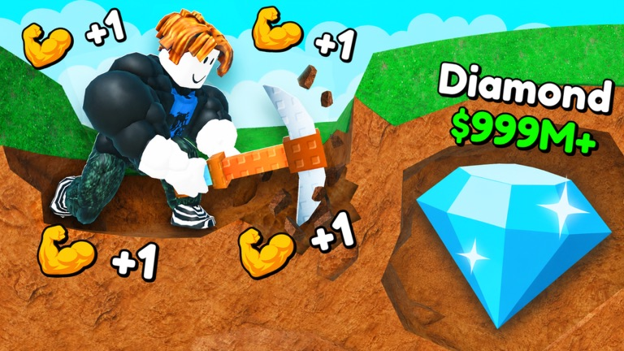

+1 Mine Per Click Wiki & Guide
Unofficial fan guide · game data last checked July 3, 2026
+1 Mine Per Click ⛏️ is an incremental mining simulator on Roblox by the verified group VERY LUCKY. Every click trains your Strength, deeper layers hide better loot, and the game keeps paying out even while you're offline.

- 19.1M+visits
- 921K+favorites
- 30–90Kplayers online
- May 17, 2026released
Seven weeks after release the game is regularly among the busier incremental simulators on Roblox, and it's still being updated frequently. This wiki keeps the stable parts — mechanics, strategy, and what's actually true about codes — in one place, checked against the live game data above.
Quick facts
| Developer | VERY LUCKY (verified Roblox group) |
|---|---|
| Released | May 17, 2026 |
| Genre | Simulation → Incremental Simulator |
| Visits | 19.1M+ (as of July 3, 2026) |
| Favorites | 921K+ |
| Concurrent players | ~30,000–90,000 in recent weeks |
| Server size | 20 players |
| Private servers | Free |
| Codes | None confirmed — details |
How the game loop works
The developer sums the game up in five steps, and that really is the whole loop — the depth comes from how the steps feed each other:
- Train your Strength 💪 — clicking trains Strength. Strength determines how hard you hit blocks, so it's the stat everything else depends on.
- Mine down 💥 — dig through layers of blocks. The deeper you go, the tougher the blocks and the better the loot.
- Collect loot & sell it 💵 — ores and loot you dig up convert to Cash when you sell.
- Upgrade your Pickaxe ⬆️ — Cash goes into pickaxe upgrades, which makes mining faster, which makes more Cash.
- Rebirth 🔄 — reset your run for permanent gains and push deeper. The stated goal of the game: reach the bottom. See the rebirth guide.
Offline earnings
You earn Strength and Cash while offline. This is core to the game's design, not a side perk — the incremental genre lives on "come back stronger" sessions. Practically it means short, regular check-ins (log in, spend your accumulated Cash on pickaxe upgrades, push a bit deeper, log out) are a perfectly viable way to progress. The beginner's guide covers how to make those sessions count.
Guides
- CodesAre there working codes? Current status, checked July 2026.
- Beginner's GuideThe loop explained, early priorities, mistakes to avoid.
- Rebirth GuideWhat rebirth does and when it's worth pressing the button.
- Private ServersThey're free — how to make one and why you'd want to.
- vs +1 Blocks Per ClickTwo similarly named games, different developers. Which is which?
FAQ
Are there any codes?
No confirmed working codes as of July 2026, and the game doesn't advertise a redeem system. Most "codes" lists you'll find are actually for a different game — full explanation on the codes page.
Do I earn anything while offline?
Yes — Strength and Cash both accumulate while you're away.
Are private servers really free?
Yes. Create one from the Servers tab on the game's Roblox page. How and why →
Is this the same game as +1 Blocks Per Click?
No — different game, different developer. See the comparison.
Where do I play it?
On the official Roblox page: +1 Mine Per Click on Roblox.